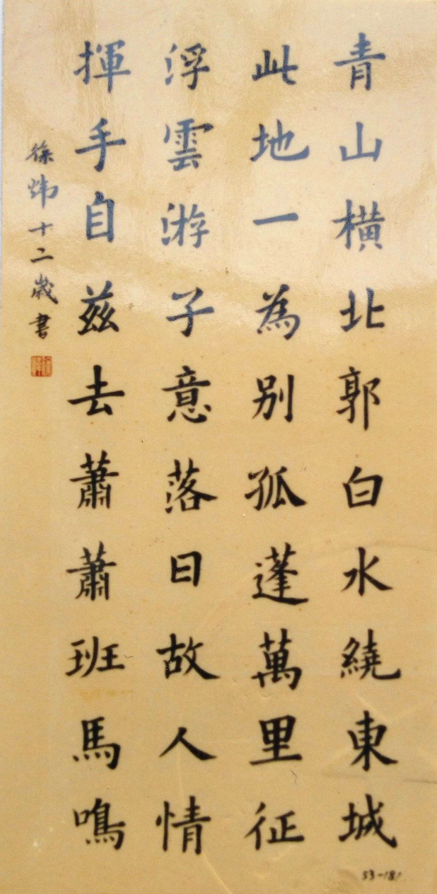
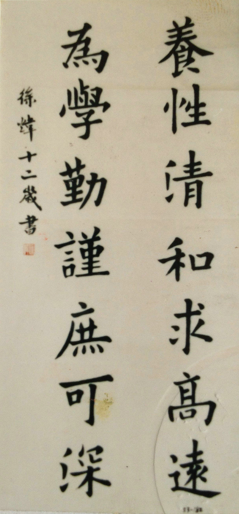
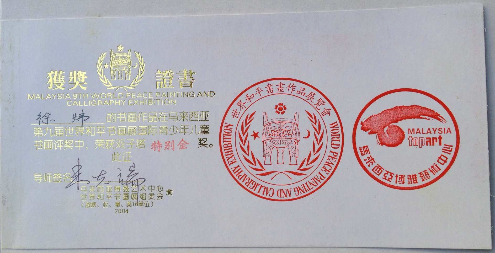
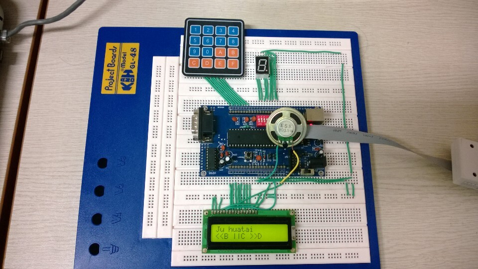

Experience&Work
Art ( Top )
I started learning Chinese brush calligraphy from 7 and has created a lot of work. I have won prizes in competition held in China and in Southeast Asia. Calligraphy requires patience and persistence. At the beginning, my hand shaked a lot when holding the writing brush. I am proud of my good handwriting in calligraphy because this not only is the most significant part in Chinese culture, but also can cultivate my creativity and appreciation skills in art.
Here are some of work and honors.
 
Engineering ( Top )
As the focus of my curriculum project, I designed a simple electronic keyboard using AVR single-chip microcontroller, one LCD screen, one 4*4 keyboard, one loudspeaker.
I wrote a complete C program to control the whole system. The program controls the electronic components by setting high and low level output of the related PIN on the microcontroller. This electronic keyboard can play 10 musical notes. It can record music played on it and display music in different speed and pitch.
Programming ( Top )
I developed an Android application to set up a platform for in-school students to share and check their assignments for their courses. Debugging was painstaking but enjoyable. I used Json format to transfer information between client and server. I obtained solid skills in MySQL, Java and server establishment. My exploration in mobile application and network programming helped me understand the basic client/server model and HTTP. I'm still working on it.